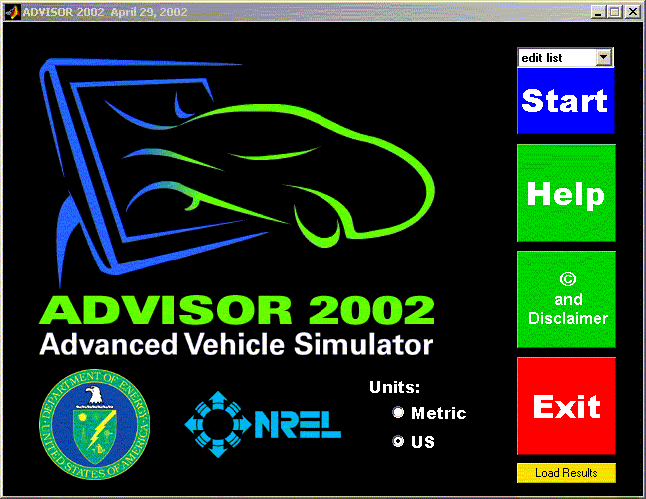
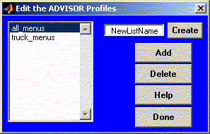

ADVISOR 2002 now supports the ability of user's to integrate their own custom menus. User's can add or delete files from the pull-down menus of ADVISOR and then save that master layout for usage later. As an example, a menu called truck_menus has been included with ADVISOR 2002 to demonstrate the functionality.
At the main ADVISOR screen, users will notice a pull-down menu just above the start button. The choices available will be to use all_menus, truck_menus, or edit list. If 'edit list' is chosen, the user can create, add, or delete new menu lists.


By customizing lists, users can more easily separate files from different projects.
Return to Main ADVISOR Documentation
Created: [2002-04-30] mpo
Modified: NA